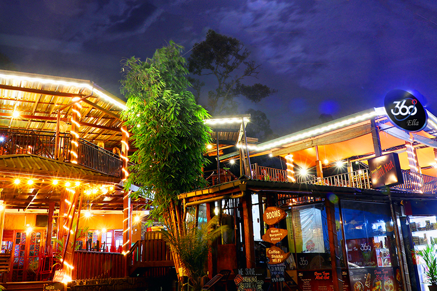

Ella is in essence a gap formed in a mountain range, very famous hot spot with the ardent adventure tourist with it myriad of adventure trails and what a beautiful sight it presents to the tired mind after a long journey. On one side the dark mountain tops with rutted cliffs falls from dizzying heights into out of site gorges where the turbulent yet infant stream of kirindi oya leaps and gambols among the rocks, on the other side green hills dotted with trees falls more gently bending their shaggy side to long winding valleys, creating a magnificent vistas around you.
It’s a place where you can go hiking above 2000 m, walk to the end of the world, or in the footsteps of Adam. Welcome to the Hill Country! This is perhaps the best place to go hiking in Sri Lanka.
If you’re coming to Sri Lanka looking for a full-on party destination like Thailand or Bali, we need to let you down now because this country is definitely NOT your place. That said, Ella is the one place in Sri Lanka where western food and a small, but decent, night out exists for those who seek it. Central to Ella’s backpacker scene is the main street, which has seen a radical transformation over the last few years. What was once a sleepy, quaint main street filled with local markets and restaurants is now a throbbing hub home to hip new cafes and bars, boutique shops, and a vibe that feels slightly more like that of an asian backpacker town. If you’re keen to get into the mix, the best place to take it all in is at Cafe Chill, located right in the centre of town. Serving delicious western-style food, cocktails and a decent soundtrack, Cafe Chill is where the cool kids hang. At night, the upper deck becomes a bar/lounge, perfect for a few Lion Beers. We can highly recommend the vegetarian burger, which was our western-style treat during a month of eating rice and curry. Further towards the train station are a number of relaxed bars serving beers and cocktails, some of which are open 24-hours, including the Bob Marley inspired Cafe One Love.
